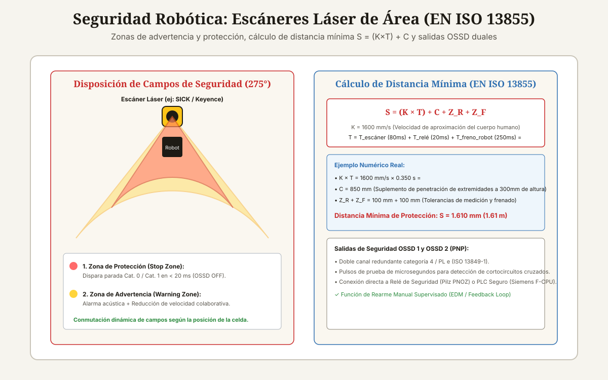

<!DOCTYPE html>
<html lang="es-CL">
<head>
<meta charset="UTF-8">
<meta name="viewport" content="width=device-width, initial-scale=1">

<title>Escáneres de Área para Seguridad en Celdas Robóticas</title>
<meta name="description" content="Guía de escáneres láser de seguridad para robots: zonas de protección y advertencia, cálculo de distancia EN ISO 13855, salidas OSSD y normas ISO 13849-1.">
<meta name="author" content="Alberto Gallardo">
<meta name="robots" content="index,follow,max-image-preview:large">
<link rel="canonical" href="https://www.ukrabot.cl/blog/escaneres-de-area-para-seguridad-en-celdas-roboticas">

<meta property="og:type" content="article">
<meta property="og:title" content="Escáneres de Área para Seguridad en Celdas Robóticas">
<meta property="og:description" content="Guía de escáneres láser de seguridad para robots: zonas de protección y advertencia, cálculo de distancia EN ISO 13855, salidas OSSD y normas ISO 13849-1.">
<meta property="og:image" content="https://www.ukrabot.cl/blog/escaneres_area_seguridad_esquema.svg">
<meta property="og:url" content="https://www.ukrabot.cl/blog/escaneres-de-area-para-seguridad-en-celdas-roboticas">
<meta property="og:locale" content="es_CL">
<meta property="og:site_name" content="Blog de Ingeniería Robótica">

<meta name="twitter:card" content="summary_large_image">
<meta name="twitter:title" content="Escáneres de Área para Seguridad en Celdas Robóticas">
<meta name="twitter:description" content="Guía de escáneres láser de seguridad para robots: zonas de protección y advertencia, cálculo de distancia EN ISO 13855, salidas OSSD y normas ISO 13849-1.">
<meta name="twitter:image" content="https://www.ukrabot.cl/blog/escaneres_area_seguridad_esquema.svg">

<script type="application/ld+json">
{
  "@context": "https://schema.org",
  "@type": "TechArticle",
  "headline": "Escáneres de Área para Seguridad en Celdas Robóticas",
  "description": "Guía de escáneres láser de seguridad para robots: zonas de protección y advertencia, cálculo de distancia EN ISO 13855, salidas OSSD y normas ISO 13849-1.",
  "author": {
    "@type": "Person",
    "name": "Alberto Gallardo",
    "jobTitle": "Analista Programador Computacional",
    "url": "https://www.ukrabot.cl/about",
    "worksFor": {
      "@type": "Organization",
      "name": "Blog de Ingeniería Robótica"
    }
  },
  "publisher": {
    "@type": "Organization",
    "name": "Blog de Ingeniería Robótica",
    "url": "https://www.ukrabot.cl",
    "logo": {
      "@type": "ImageObject",
      "url": "https://www.ukrabot.cl/logo.png"
    }
  },
  "datePublished": "2026-08-15",
  "dateModified": "2026-08-15",
  "mainEntityOfPage": {
    "@type": "WebPage",
    "@id": "https://www.ukrabot.cl/blog/escaneres-de-area-para-seguridad-en-celdas-roboticas"
  },
  "image": "https://www.ukrabot.cl/blog/escaneres_area_seguridad_esquema.svg",
  "proficiencyLevel": "Avanzado",
  "dependencies": "Normativas de seguridad de maquinaria (ISO 13849-1 / IEC 62061), escáner láser de seguridad (SICK microScan3 / Keyence SZ-V), relé de seguridad",
  "wordCount": "3400",
  "inLanguage": "es-CL"
}
</script>

<script type="application/ld+json">
{
  "@context": "https://schema.org",
  "@type": "BreadcrumbList",
  "itemListElement": [
    {
      "@type": "ListItem",
      "position": 1,
      "name": "Inicio",
      "item": "https://www.ukrabot.cl/"
    },
    {
      "@type": "ListItem",
      "position": 2,
      "name": "Blog",
      "item": "https://www.ukrabot.cl/blog/"
    },
    {
      "@type": "ListItem",
      "position": 3,
      "name": "Escáneres de Área para Seguridad en Celdas Robóticas",
      "item": "https://www.ukrabot.cl/blog/escaneres-de-area-para-seguridad-en-celdas-roboticas"
    }
  ]
}
</script>

<script type="application/ld+json">
{
  "@context": "https://schema.org",
  "@type": "FAQPage",
  "mainEntity": [
    {
      "@type": "Question",
      "name": "¿A qué altura del suelo se debe montar un escáner de seguridad?",
      "acceptedAnswer": {
        "@type": "Answer",
        "text": "La norma EN ISO 13855 recomienda una altura de montaje del plano óptico de <strong>300 mm sobre el nivel del suelo</strong> para detección de piernas y cuerpo entero. Si se monta a más de 300 mm, una persona podría arrastrarse por debajo sin ser detectada."
      }
    },
    {
      "@type": "Question",
      "name": "¿Qué sucede si hay polvo, vapor o humo en el ambiente de la celda?",
      "acceptedAnswer": {
        "@type": "Answer",
        "text": "El polvo denso o la niebla de aceite pueden dispersar el rayo láser, provocando paradas intempestivas. Los escáneres de gama alta (como SICK microScan3 con tecnología SafeHDDM) utilizan algoritmos de filtrado digital de ecos múltiples para discriminar partículas de polvo de extremidades humanas."
      }
    },
    {
      "@type": "Question",
      "name": "¿Cuál es la diferencia entre un escáner de seguridad y un sensor LiDAR para robots aspiradores?",
      "acceptedAnswer": {
        "@type": "Answer",
        "text": "Un LiDAR comercial no tiene hardware redundante de autodiagnóstico: si su procesador se congela, no puede garantizar el corte de señal. Un escáner de seguridad cuenta con arquitectura de canal dual certificada bajo <strong>ISO 13849-1 Categoría 4 / PL e</strong> con probabilidad de falla peligrosa por hora prácticamente nula (PFHd &lt; 1e-8)."
      }
    },
    {
      "@type": "Question",
      "name": "¿Qué es la función de Muting en un escáner de seguridad?",
      "acceptedAnswer": {
        "@type": "Answer",
        "text": "Es la desactivación automática y temporal de una zona de protección cuando un pallet de material autorizado ingresa a la celda. Se valida mediante sensores fotoeléctricos secuenciales en cruz para verificar que es un objeto y no una persona."
      }
    },
    {
      "@type": "Question",
      "name": "¿Por qué el escáner requiere una zona de advertencia además de la de parada?",
      "acceptedAnswer": {
        "@type": "Answer",
        "text": "Porque detener un brazo robótico pesado a plena velocidad somete los reductores a esfuerzos mecánicos brutales y arruina la pieza en proceso. La zona de advertencia frena el robot suavemente antes de que la persona cruce el límite crítico de parada de emergencia."
      }
    }
  ]
}
</script>

<style>
:root{--ink:#f6f4ee;--card:#ffffff;--text:#1e1b15;--muted:#57534a;--quiet:#8b8577;--gold:#a97b23;--gold-bright:#e4c07a;--blue:#2f6fb0;--line:rgba(30,25,15,.09)}
*{box-sizing:border-box}
html{scroll-behavior:smooth}
body{margin:0;background:var(--ink);color:var(--text);font-family:Inter,system-ui,-apple-system,Segoe UI,sans-serif;line-height:1.7;overflow-x:hidden}
img{max-width:100%;height:auto}
a{color:var(--blue);text-underline-offset:3px}
.container{max-width:1050px;margin:auto;padding:0 24px}

/* NAV */
.site-nav{position:sticky;top:0;z-index:50;background:rgba(246,244,238,.95);backdrop-filter:blur(12px);border-bottom:1px solid var(--line)}
.nav-inner{position:relative;display:flex;justify-content:space-between;align-items:center;padding:16px 24px;max-width:1050px;margin:auto;gap:12px}
.logo{color:var(--text);text-decoration:none;font-family:Georgia,serif;font-size:1.35rem;flex-shrink:0}
.logo span{color:var(--gold);font-style:italic}
.nav-links{display:flex;gap:20px;font-size:.86rem}
.nav-links a{color:var(--muted);text-decoration:none;white-space:nowrap}
.nav-links a:hover{color:var(--text)}
.nav-toggle{display:none;flex-direction:column;justify-content:center;gap:5px;width:38px;height:38px;padding:0;background:none;border:1px solid var(--line);border-radius:8px;cursor:pointer;flex-shrink:0}
.nav-toggle span{display:block;width:18px;height:2px;background:var(--text);margin:0 auto;transition:transform .2s ease,opacity .2s ease}
.nav-toggle[aria-expanded="true"] span:nth-child(1){transform:translateY(7px) rotate(45deg)}
.nav-toggle[aria-expanded="true"] span:nth-child(2){opacity:0}
.nav-toggle[aria-expanded="true"] span:nth-child(3){transform:translateY(-7px) rotate(-45deg)}

.progress-bar{position:fixed;top:0;left:0;height:3px;width:0;background:linear-gradient(90deg,var(--gold),var(--blue));z-index:300;transition:width .08s linear}

.hero{position:relative;min-height:50vh;display:flex;align-items:end;overflow:hidden;background:#151310}
.hero>img{position:absolute;inset:0;width:100%;height:100%;object-fit:cover;filter:brightness(.45) contrast(1.08);z-index:0}
.hero:after{content:"";position:absolute;inset:0;background:linear-gradient(180deg,rgba(18,15,11,.35) 0%,rgba(18,15,11,.62) 55%,rgba(18,15,11,.88) 100%);z-index:1}
.hero-inner{position:relative;z-index:2;padding:90px 24px 60px;width:100%;max-width:1050px;margin:auto}
.eyebrow{color:var(--gold-bright);font-size:.76rem;letter-spacing:.13em;text-transform:uppercase;font-weight:700}
.hero h1{font-family:Georgia,serif;font-size:clamp(1.9rem,5.5vw,3.8rem);line-height:1.15;font-weight:400;max-width:900px;margin:18px 0;color:#fff;word-wrap:break-word}
.hero p{color:rgba(245,243,238,.78);max-width:720px;font-size:1.05rem}
.byline{color:rgba(245,243,238,.55);font-size:.85rem;margin-top:14px}
.byline a{color:var(--gold-bright);text-decoration:none}
.byline a:hover{text-decoration:underline}

.article-body{padding-top:64px;padding-bottom:90px}
.article-body h2{font-family:Georgia,serif;font-size:1.9rem;font-weight:400;line-height:1.2;margin:54px 0 16px;color:var(--text)}
.article-body h3{font-size:1.18rem;margin:32px 0 8px;color:var(--text)}
.article-body p{color:var(--muted);margin:0 0 20px}
.article-body li{color:var(--muted);margin:8px 0}
.article-body strong{color:var(--text)}

.toc,.note,.cta{background:linear-gradient(135deg,rgba(169,123,35,.08),rgba(47,111,176,.06));border:1px solid var(--line);border-radius:14px;padding:24px;margin:28px 0}
.toc h2{font-family:inherit;font-size:1.05rem;margin:0 0 10px}
.toc ol{margin:0;padding-left:22px}
.toc a{color:var(--muted);text-decoration:none}
.toc a:hover{color:var(--gold)}

.note{border-left:4px solid var(--gold)}
.note strong{color:var(--text)}
.warning{background:linear-gradient(135deg,rgba(178,40,30,.08),rgba(178,40,30,.03));border:1px solid rgba(178,40,30,.25);border-left:4px solid #b2281e;border-radius:14px;padding:24px;margin:28px 0}
.warning strong{color:#7a1c14}

.article-img{margin:0 0 42px;border:1px solid var(--line);border-radius:14px;overflow:hidden}
.article-img img{width:100%;display:block}
.caption{padding:12px 16px;background:var(--card);color:var(--quiet);font-size:.82rem}

.table-wrap{overflow-x:auto;-webkit-overflow-scrolling:touch;border:1px solid var(--line);border-radius:12px;margin:22px 0;box-shadow:0 8px 24px rgba(30,25,15,.06)}
table{border-collapse:collapse;width:100%;min-width:650px;background:var(--card)}
th,td{text-align:left;padding:13px 14px;border-bottom:1px solid var(--line);color:var(--muted)}
th{background:#faf7f0;color:var(--text);font-size:.78rem;text-transform:uppercase;letter-spacing:.06em}
td:first-child{color:var(--text);font-weight:600}

pre{overflow-x:auto;-webkit-overflow-scrolling:touch;background:#14121a;border:1px solid rgba(255,255,255,.08);border-radius:12px;padding:20px;color:#e8d9b6;line-height:1.5;font-size:.88rem;white-space:pre-wrap;word-break:break-word}
code{font-family:ui-monospace,SFMono-Regular,Consolas,monospace}

.faq{border-bottom:1px solid var(--line)}
details{border-top:1px solid var(--line);padding:16px 0}
summary{cursor:pointer;color:var(--text);font-weight:600}
details p{padding-top:10px;margin-bottom:0}

.footer-nav{border-top:1px solid var(--line);padding-top:34px;margin-top:54px;display:flex;justify-content:space-between;gap:20px;flex-wrap:wrap}
.footer-nav a{color:var(--muted);text-decoration:none;max-width:100%}
.footer-nav a:hover{color:var(--gold)}

.disclosure{font-size:.78rem;color:var(--quiet);border-top:1px solid var(--line);padding-top:16px;margin-top:34px}
.cta h3{margin:0 0 8px;font-size:1.05rem;color:var(--text)}
.cta p{margin:0}

/* ===== RESPONSIVE ===== */
@media(max-width:760px){
  .nav-toggle{display:flex}
  .nav-links{
    position:absolute;
    top:100%;
    left:0;
    right:0;
    flex-direction:column;
    align-items:flex-start;
    gap:2px;
    background:rgba(246,244,238,.98);
    backdrop-filter:blur(12px);
    border-bottom:1px solid var(--line);
    padding:8px 24px 18px;
    box-shadow:0 12px 24px rgba(30,25,15,.08);
    display:none;
  }
  .nav-links.open{display:flex}
  .nav-links a{padding:10px 0;width:100%}
}

@media(max-width:700px){
  .hero-inner{padding:70px 20px 40px}
  .article-body h2{font-size:1.55rem;margin:40px 0 14px}
  .article-body{padding-top:44px;padding-bottom:60px}
}

@media(max-width:480px){
  .container{padding:0 16px}
  .nav-inner{padding:14px 16px}
  .logo{font-size:1.15rem}
  .hero{min-height:55vh}
  .hero-inner{padding:60px 16px 35px}
  .hero p{font-size:.95rem}
  .eyebrow{font-size:.7rem}
  .article-body h2{font-size:1.35rem}
  .article-body h3{font-size:1.05rem}
  .toc,.note,.cta,.warning{padding:16px;margin:20px 0}
  .toc ol{padding-left:18px}
  th,td{padding:10px 10px;font-size:.82rem}
  table{min-width:560px}
  pre{padding:14px;font-size:.78rem}
  .article-img .caption{font-size:.78rem;padding:10px 12px}
  .disclosure{font-size:.74rem}
  .footer-nav{gap:12px}
  .footer-nav a{font-size:.9rem}
}
</style>
  <script>
  window.dataLayer = window.dataLayer || [];
  function gtag(){dataLayer.push(arguments);}
  gtag('consent', 'default', {
    'ad_storage': 'denied',
    'ad_user_data': 'denied',
    'ad_personalization': 'denied',
    'analytics_storage': 'denied',
    'wait_for_update': 500
  });
  (function(){
    try {
      var c = document.cookie.match(/(?:^|;\s*)rel_consent=([^;]+)/);
      if (c && c[1] === 'granted') {
        gtag('consent', 'update', {
          'ad_storage': 'granted',
          'ad_user_data': 'granted',
          'ad_personalization': 'granted',
          'analytics_storage': 'granted'
        });
      }
    } catch (e) {}
  })();
</script>
  <script async src="https://pagead2.googlesyndication.com/pagead/js/adsbygoogle.js?client=ca-pub-7032484018692343" crossorigin="anonymous"></script>
  <!-- Google tag (gtag.js) -->
  <script async src="https://www.googletagmanager.com/gtag/js?id=G-1ZVHF8X35Q"></script>
  <script>
    window.dataLayer = window.dataLayer || [];
    function gtag(){dataLayer.push(arguments);}
    gtag('js', new Date());
    gtag('config', 'G-1ZVHF8X35Q');
  </script>

</head>
<body>

<div class="progress-bar" id="progress-bar" aria-hidden="true"></div>

<nav class="site-nav" aria-label="Navegación del sitio">
  <div class="nav-inner">
    <a class="logo" href="/">Robótica <span>Ingeniería</span></a>
    <button class="nav-toggle" id="nav-toggle" aria-expanded="false" aria-controls="nav-links" aria-label="Abrir menú de navegación">
      <span></span><span></span><span></span>
    </button>
    <div class="nav-links" id="nav-links">
      <a href="/">Inicio</a>
      <a href="/#categories">Tutoriales</a>
      <a href="/#proyecto-destacado">Proyecto del Mes</a>
      <a href="/about">Sobre Nosotros</a>
      <a href="/contact">Contacto</a>
    </div>
  </div>
</nav>

<header class="hero">
  
  <div class="hero-inner">
    <div class="eyebrow">Mantenimiento, Calibración y Visión · Actualizado el <time datetime="2026-08-15">15 de agosto de 2026</time></div>
    <h1>Escáneres de Área para Seguridad en Celdas Robóticas</h1>
    <p>Seguridad funcional en automatización (ISO 13849-1 PL d/e): tecnología de escáneres láser LiDAR de seguridad, cálculo de distancias mínimas (EN ISO 13855 S=(K×T)+C), conmutación de campos dinámicos y cableado OSSD dual.</p>
    <p class="byline">Por <a href="/about">Alberto Gallardo</a>, Analista Programador Computacional · 19 min de lectura</p>
  </div>
</header>

<main class="container article-body">
<article>

<div class="article-img">
  
  <div class="caption">Geometría de campos ópticos de seguridad: campo de advertencia exterior, campo de protección interior y cálculo de distancia mínima de aproximación.</div>
</div>

<nav class="toc" aria-label="Índice del contenido">
  <h2>Contenido de la guía</h2>
  <ol>
    <li><a href="#fundamentos-seguridad-laser">El principio óptico de los escáneres láser de seguridad (LiDAR)</a></li>
<li><a href="#zonas-seguridad-dinamicas">Zonas de advertencia vs Zonas de protección y conmutación dinámica</a></li>
<li><a href="#calculo-distancia-en13855">Cálculo de distancia mínima de seguridad según EN ISO 13855</a></li>
<li><a href="#cableado-ossd-redundante">Salidas OSSD (Output Signal Switching Device) y cableado seguro</a></li>
<li><a href="#faq">Preguntas frecuentes</a></li>
  </ol>
</nav>

<section id="fundamentos-seguridad-laser">
<h2>El principio óptico de los escáneres láser de seguridad (LiDAR)</h2>

<p>En celdas robóticas industriales, las barreras perimetrales físicas de malla metálica consumen valioso espacio en planta y dificultan la carga y descarga rápida de materiales. Los <strong>escáneres láser de área de seguridad (Safety Laser Scanners)</strong> permiten implementar celdas abiertas sin barreras físicas, garantizando la detención inmediata de la maquinaria si una persona invade la zona de peligro.</p>
<p>El escáner emite pulsos de luz láser infrarroja invisible (Láser Clase 1 seguro para los ojos, longitud de onda $pprox 905	ext{ nm}$) reflejados en un espejo giratorio a 360° o 275°. Mediante el principio de <strong>Tiempo de Vuelo (Time-of-Flight - ToF)</strong>, el dispositivo calcula las coordenadas polares exactas (distancia y ángulo) de cualquier obstáculo en su plano de barrido con una frecuencia de refresco de 30 a 80 ms.</p>

</section>
<section id="zonas-seguridad-dinamicas">
<h2>Zonas de advertencia vs Zonas de protección y conmutación dinámica</h2>

<p>Un escáner de seguridad moderno permite configurar decenas de juegos de campos programables por software:</p>
<ul>
  <li><strong>Campo de Advertencia (Warning Field — Radio hasta 15-40 m):</strong> Cuando un operario ingresa a esta zona externa, no se detiene el robot: se activa una baliza luminosa amarilla, una señal acústica y se ordena al robot reducir su velocidad de trabajo al 30% (Modo de velocidad reducida segura — SLS).</li>
  <li><strong>Campo de Protección (Safety Protective Field — Radio hasta 4-9 m):</strong> Si una persona pisa este perímetro crítico, los contactos de seguridad OSSD se abren en menos de <strong>20 milisegundos</strong>, disparando una parada de seguridad Categoría 0 (corte instantáneo de potencia) o Categoría 1 (parada controlada con frenos mecánicos activos).</li>
  <li><strong>Conmutación Dinámica de Campos (Dynamic Field Switching):</strong> Las zonas de seguridad no son estáticas. Mediante entradas digitales conectadas a los encoders del robot o al PLC de seguridad, el escáner conmuta el mapa de zonas: si el brazo se encuentra trabajando en el lado izquierdo de la celda, el campo de protección del lado derecho se desactiva para permitir que un operario retire una pieza terminada sin detener la línea.</li>
</ul>

</section>

<div class="ad-slot" style="margin:34px 0;min-height:280px;text-align:center;">
  <!-- ANUNCIO UKRABOT -->
  <ins class="adsbygoogle"
       style="display:block"
       data-ad-client="ca-pub-7032484018692343"
       data-ad-slot="7434550690"
       data-ad-format="auto"
       data-full-width-responsive="true"></ins>
  <script>(adsbygoogle = window.adsbygoogle || []).push({});</script>
</div>
<section id="calculo-distancia-en13855">
<h2>Cálculo de distancia mínima de seguridad según EN ISO 13855</h2>

<p>El tamaño del campo de protección no se dibuja a ojo; la norma internacional <strong>EN ISO 13855</strong> establece una fórmula matemática obligatoria para garantizar que el robot se detenga por completo antes de que el operario alcance el punto de atrapamiento:</p>

<div class="note"><strong>Ecuación de Distancia de Seguridad:</strong>
$$S = (K \cdot T) + C + Z_R + Z_F$$
Donde:
<ul>
  <li>$K = 1.600	ext{ mm/s}$ (Velocidad de aproximación estandarizada del cuerpo humano al caminar).</li>
  <li>$T = t_{escaner} + t_{rele} + t_{frenado\_robot}$ (Tiempo total de parada del sistema en segundos).</li>
  <li>$C = 850	ext{ mm}$ (Suplemento de penetración para evitar que un operario pase un pie por encima del haz láser a una altura de montaje de 300 mm).</li>
  <li>$Z_R = 100	ext{ mm}$ (Tolerancia de medición por reflexión del escáner).</li>
  <li>$Z_F = 100	ext{ mm}$ (Distancia de frenado adicional por desgaste de frenos mecánicos).</li>
</ul>
</div>

<h3>Ejemplo Práctico de Cálculo:</h3>
<p>Tiempo de respuesta del escáner $t_1 = 0.080	ext{ s}$, tiempo del relé de seguridad $t_2 = 0.020	ext{ s}$, tiempo de frenado a plena carga del brazo robótico $t_3 = 0.250	ext{ s}$:</p>
$$T_{total} = 0.080 + 0.020 + 0.250 = 0.350	ext{ segundos}$$
$$S = (1.600	ext{ mm/s} \cdot 0.350	ext{ s}) + 850	ext{ mm} + 100	ext{ mm} + 100	ext{ mm}$$
$$S = 560	ext{ mm} + 850	ext{ mm} + 200	ext{ mm} = \mathbf{1.610	ext{ mm (1.61 metros)}}$$
<p>El límite del campo de protección debe ubicarse al menos a <strong>1.61 metros</strong> de la zona de máximo alcance del efector final del robot.</p>

</section>
<section id="cableado-ossd-redundante">
<h2>Salidas OSSD (Output Signal Switching Device) y cableado seguro</h2>

<p>Los escáneres de seguridad no utilizan relés mecánicos convencionales con contactos secos, sino <strong>salidas de estado sólido OSSD (canales redundantes OSSD 1 y OSSD 2 a 24V DC)</strong>:</p>
<ul>
  <li><strong>Pulsos de Prueba de Autodiagnóstico (Test Pulses):</strong> El microprocesador del escáner desconecta las salidas OSSD durante microsegundos (típicamente &lt; 200 μs) de forma asíncrona. Esta caída de tensión es invisible para los relés, pero permite al escáner detectar si existe un cortocircuito a 24V positivo o un cortocircuito cruzado entre ambos canales.</li>
  <li><strong>Nivel de Rendimiento PL e / SIL 3:</strong> El cableado debe conectarse a un relé de seguridad (como Pilz PNOZ) o a un PLC de seguridad con monitoreo de discrepancia temporal (&lt; 100 ms entre canales) y circuito de rearme manual supervisado (EDM / Feedback Loop).</li>
</ul>

</section>


<section class="faq" id="faq" aria-label="Preguntas frecuentes">
<h2>Preguntas Frecuentes</h2>
<div class="faq">
<details><summary>¿A qué altura del suelo se debe montar un escáner de seguridad?</summary><p>La norma EN ISO 13855 recomienda una altura de montaje del plano óptico de <strong>300 mm sobre el nivel del suelo</strong> para detección de piernas y cuerpo entero. Si se monta a más de 300 mm, una persona podría arrastrarse por debajo sin ser detectada.</p></details>
<details><summary>¿Qué sucede si hay polvo, vapor o humo en el ambiente de la celda?</summary><p>El polvo denso o la niebla de aceite pueden dispersar el rayo láser, provocando paradas intempestivas. Los escáneres de gama alta (como SICK microScan3 con tecnología SafeHDDM) utilizan algoritmos de filtrado digital de ecos múltiples para discriminar partículas de polvo de extremidades humanas.</p></details>
<details><summary>¿Cuál es la diferencia entre un escáner de seguridad y un sensor LiDAR para robots aspiradores?</summary><p>Un LiDAR comercial no tiene hardware redundante de autodiagnóstico: si su procesador se congela, no puede garantizar el corte de señal. Un escáner de seguridad cuenta con arquitectura de canal dual certificada bajo <strong>ISO 13849-1 Categoría 4 / PL e</strong> con probabilidad de falla peligrosa por hora prácticamente nula (PFHd &lt; 1e-8).</p></details>
<details><summary>¿Qué es la función de Muting en un escáner de seguridad?</summary><p>Es la desactivación automática y temporal de una zona de protección cuando un pallet de material autorizado ingresa a la celda. Se valida mediante sensores fotoeléctricos secuenciales en cruz para verificar que es un objeto y no una persona.</p></details>
<details><summary>¿Por qué el escáner requiere una zona de advertencia además de la de parada?</summary><p>Porque detener un brazo robótico pesado a plena velocidad somete los reductores a esfuerzos mecánicos brutales y arruina la pieza en proceso. La zona de advertencia frena el robot suavemente antes de que la persona cruce el límite crítico de parada de emergencia.</p></details>
</div>
</section>

<p class="disclosure">Este artículo es contenido editorial independiente: no contiene ubicaciones patrocinadas ni enlaces de afiliado. El código, esquemas y parámetros de diseño son de carácter técnico y deben validarse con las hojas de datos de los fabricantes correspondientes. Si detectas un error técnico o tienes una sugerencia, puedes <a href="/contact">contactarnos directamente</a>.</p>

<div class="cta">
  <h3>Continúa explorando tutoriales técnicos</h3>
  <p>Conoce qué firmware domina las máquinas de fabricación digital en nuestra comparativa GRBL vs Marlin.</p>
</div>

<div class="footer-nav">
  <a href="/blog/sistemas-de-vision-computacional-para-brazos-roboticos">← Sistemas de Visión Computacional para Brazos Robóticos</a>
  <a href="/blog/grbl-vs-marlin-en-maquinas-cnc-caseras">GRBL vs. Marlin en Máquinas CNC Caseras →</a>
</div>

</article>

<section class="editorial-sources" aria-label="Fuentes primarias" style="margin:48px 0 24px;padding:22px 24px;background:#ffffff;border:1px solid rgba(30,25,15,.09);border-radius:12px;">
<h2 style="margin-top:0;font-family:Georgia,serif;font-weight:400;font-size:1.4rem;color:#1e1b15;">Fuentes primarias y lecturas recomendadas</h2>
<p style="font-size:.9rem;color:#57534a;">Hojas de datos oficiales, estándares internacionales de ingeniería y documentación técnica citada en este artículo.</p>
<ul>
<li><a href="https://www.iso.org/standard/76242.html" target="_blank" rel="noopener noreferrer">ISO 13849-1:2023 — Safety of machinery — Safety-related parts of control systems</a></li>
<li><a href="https://www.iso.org/standard/42892.html" target="_blank" rel="noopener noreferrer">EN ISO 13855:2010 — Positioning of safeguards with respect to the approach speeds of parts of the human body</a></li>
<li><a href="https://www.sick.com/" target="_blank" rel="noopener noreferrer">SICK AG — Safety Laser Scanners Technical Information and Engineering Guidelines</a></li>
<li><a href="https://www.keyence.com/" target="_blank" rel="noopener noreferrer">Keyence Corporation — Safety Laser Scanner SZ-V User Manual</a></li>
</ul>
<p style="font-size:.75rem;color:#8b8577;margin-bottom:0;">Enlaces y especificaciones revisadas: 15 de agosto de 2026.</p>
</section>
</main>

<footer class="container" style="border-top:1px solid var(--line);padding-top:34px;padding-bottom:45px;color:var(--quiet);font-size:.85rem">
  <p>Blog de Ingeniería Robótica · Tutoriales prácticos de Arduino, robótica, automatización y electrónica aplicada, escritos y mantenidos por Alberto Gallardo.</p>
  <p style="margin-top:10px;">
    <a href="/about" style="color:var(--muted);text-decoration:none;margin-right:16px;">Sobre Nosotros</a>
    <a href="/contact" style="color:var(--muted);text-decoration:none;margin-right:16px;">Contacto</a>
    <a href="/privacy" style="color:var(--muted);text-decoration:none;">Política de Privacidad</a>
  </p>
  <div style="max-width:1100px;margin:28px auto 0;padding-top:20px;border-top:1px solid rgba(30,25,15,.09);display:flex;flex-wrap:wrap;gap:18px;align-items:center;justify-content:space-between;">
      <p style="font-size:0.8rem;opacity:0.6;margin:0;">&copy; 2023&ndash;2026 Blog de Ingeniería Robótica · Alberto Gallardo. Todos los derechos reservados.</p>
      <nav aria-label="Enlaces legales y de empresa" style="display:flex;flex-wrap:wrap;gap:18px;">
        <a href="/about" style="font-size:0.82rem;opacity:0.75;text-decoration:none;color:inherit;">Sobre Nosotros</a>
        <a href="/contact" style="font-size:0.82rem;opacity:0.75;text-decoration:none;color:inherit;">Contacto</a>
        <a href="/privacy" style="font-size:0.82rem;opacity:0.75;text-decoration:none;color:inherit;">Política de Privacidad</a>
        <a href="/terms" style="font-size:0.82rem;opacity:0.75;text-decoration:none;color:inherit;">Términos y Condiciones</a>
      </nav>
  </div>
</footer>

<div id="rel-consent" role="dialog" aria-modal="false" aria-labelledby="rel-consent-title" hidden
     style="position:fixed;left:0;right:0;bottom:0;z-index:9999;background:#ffffff;border-top:1px solid rgba(30,25,15,0.12);box-shadow:0 -8px 32px rgba(30,25,15,0.18);padding:20px 24px;font-family:Inter,system-ui,-apple-system,Segoe UI,sans-serif;">
  <div style="max-width:1100px;margin:0 auto;display:flex;flex-wrap:wrap;gap:20px;align-items:center;justify-content:space-between;">
    <div style="flex:1;min-width:260px;">
      <p id="rel-consent-title" style="margin:0 0 6px;font-size:0.95rem;font-weight:600;color:#1e1b15;">Usamos cookies</p>
      <p style="margin:0;font-size:0.85rem;line-height:1.5;color:#57534a;">
        Usamos cookies para operar este sitio y, con tu consentimiento, para mostrar anuncios personalizados a través de Google AdSense.
        Puedes rechazar y seguir leyendo todo el contenido. Consulta nuestra
        <a id="rel-consent-privacy" href="/privacy" style="color:#2f6fb0;">Política de Privacidad</a>.
      </p>
    </div>
    <div style="display:flex;gap:10px;flex-wrap:wrap;">
      <button type="button" id="rel-consent-decline"
        style="padding:11px 22px;border-radius:999px;border:1px solid rgba(30,25,15,0.25);background:transparent;color:#1e1b15;font-family:inherit;font-weight:600;font-size:0.85rem;cursor:pointer;">Rechazar</button>
      <button type="button" id="rel-consent-accept"
        style="padding:11px 22px;border-radius:999px;border:none;background:#a97b23;color:#ffffff;font-family:inherit;font-weight:700;font-size:0.85rem;cursor:pointer;">Aceptar todo</button>
    </div>
  </div>
</div>
<script>
(function () {
  var NAME = 'rel_consent';
  var box = document.getElementById('rel-consent');
  if (!box) return;

  function read() {
    var m = document.cookie.match(/(?:^|;\s*)rel_consent=([^;]+)/);
    return m ? m[1] : null;
  }
  function write(v) {
    var d = new Date();
    d.setTime(d.getTime() + 180 * 24 * 60 * 60 * 1000);
    document.cookie = NAME + '=' + v + ';expires=' + d.toUTCString() + ';path=/;SameSite=Lax';
  }

  if (!read()) box.hidden = false;

  function decide(granted) {
    write(granted ? 'granted' : 'denied');
    if (typeof gtag === 'function') {
      gtag('consent', 'update', {
        'ad_storage': granted ? 'granted' : 'denied',
        'ad_user_data': granted ? 'granted' : 'denied',
        'ad_personalization': granted ? 'granted' : 'denied',
        'analytics_storage': granted ? 'granted' : 'denied'
      });
    }
    box.hidden = true;
  }

  document.getElementById('rel-consent-accept').addEventListener('click', function () { decide(true); });
  document.getElementById('rel-consent-decline').addEventListener('click', function () { decide(false); });
})();
</script>
<script>
(function () {
  var bar = document.getElementById('progress-bar');
  if (!bar) return;
  function update() {
    var doc = document.documentElement;
    var max = doc.scrollHeight - doc.clientHeight;
    var pct = max > 0 ? (window.scrollY || doc.scrollTop) / max * 100 : 0;
    bar.style.width = pct + '%';
  }
  window.addEventListener('scroll', update, { passive: true });
  window.addEventListener('resize', update);
  update();
})();
</script>
<script>
(function () {
  var toggle = document.getElementById('nav-toggle');
  var links = document.getElementById('nav-links');
  if (!toggle || !links) return;

  toggle.addEventListener('click', function () {
    var expanded = toggle.getAttribute('aria-expanded') === 'true';
    toggle.setAttribute('aria-expanded', String(!expanded));
    links.classList.toggle('open');
  });

  links.querySelectorAll('a').forEach(function (a) {
    a.addEventListener('click', function () {
      toggle.setAttribute('aria-expanded', 'false');
      links.classList.remove('open');
    });
  });

  document.addEventListener('click', function (e) {
    if (!links.contains(e.target) && !toggle.contains(e.target)) {
      toggle.setAttribute('aria-expanded', 'false');
      links.classList.remove('open');
    }
  });
})();
</script>
</body>
</html>